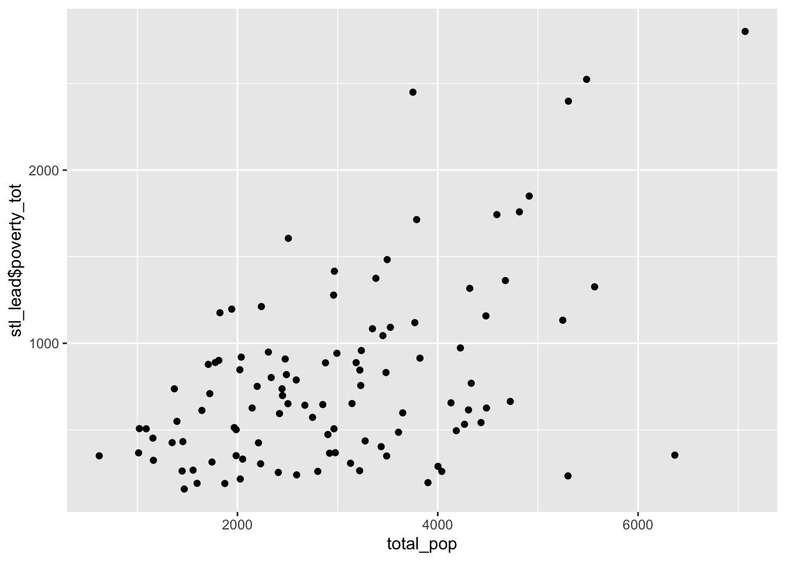
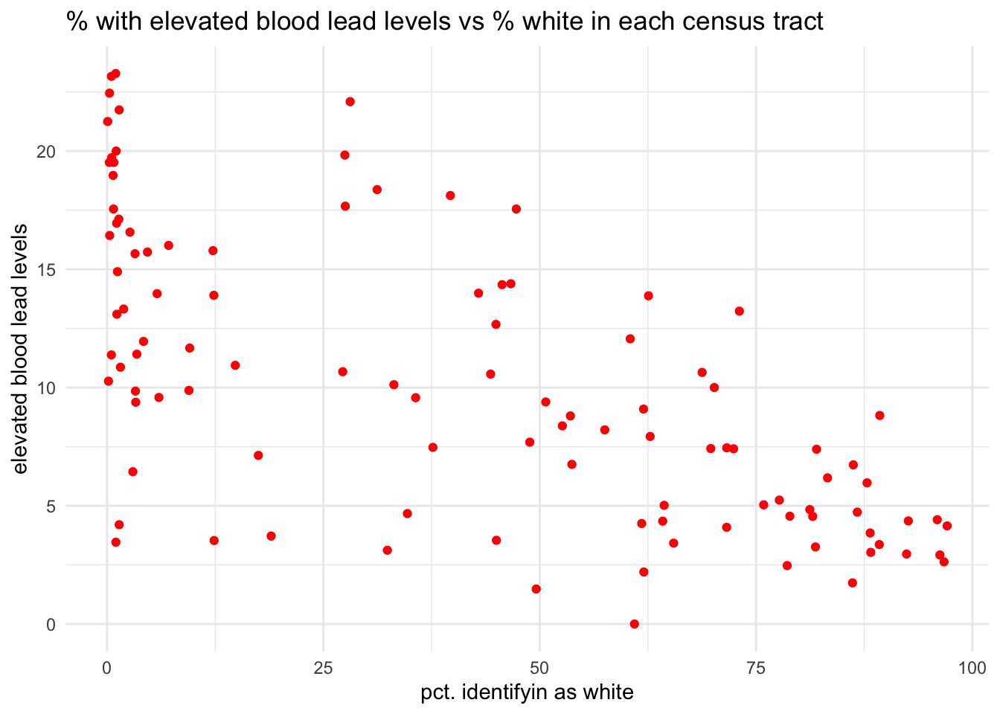
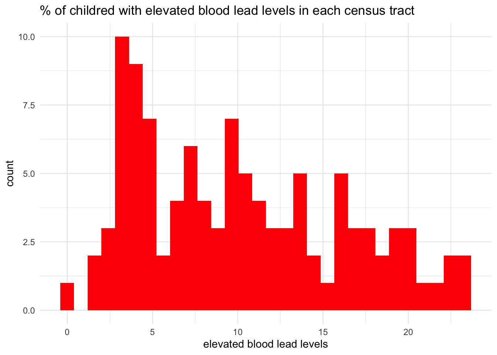

[1] 786.9434stl_lead_inequity.qmd
- Do some basic exploration of the dataset (e.g. using summary, data visualizations and summary statistics).
[1] 528.6113[1] 324 615 506 958 349 1743# A tibble: 6 × 15
geo_id tract_ce name_lsad count_tested pct_elevated total_pop total_pop_moe
<dbl> <dbl> <chr> <dbl> <dbl> <dbl> <dbl>
1 2.95e10 117200 Census T… 1314 7.69 5566 606
2 2.95e10 102300 Census T… 298 4.36 1987 218
3 2.95e10 109700 Census T… 1070 15.8 2239 357
4 2.95e10 102400 Census T… 544 8.82 2673 205
5 2.95e10 106200 Census T… 1107 11.4 1825 325
6 2.95e10 109600 Census T… 952 21.7 3222 555
# ℹ 8 more variables: white <dbl>, white_moe <dbl>, black <dbl>,
# black_moe <dbl>, poverty_tot <dbl>, poverty_tot_moe <dbl>,
# poverty_u18 <dbl>, poverty_u18_moe <dbl>
- In a new code chunk, from
stl_leadcreate a new data frame calledstl_lead_propthat has one additional column calledprop_whitethat returns the percent of each census tract identifying as white (variablewhitein the dataset divided by variabletotalPop, times 100). You may need to do some Googling. Hint:dplyr::mutate(new_col = col_a / col_b)will create a new columnnew_colthat contains the value ofcol_a / col_b
Create a scatterplot
In a new code chunk, create a scatterplot graph of the percentage of children in each census tract with elevated blood lead levels (
pctElevated) versus the percent of each census tract identifying as white.Customize by updating several aesthetics (e.g. size, opacity (see
alpha =), color, etc.)Store the scatterplot as
stl_lead_plotHave the scatterplot returned in the knitted html - customize the size that it appears when knitted
Also save a .png of the scatterplot to
figs, with dimensions of (6" x 5") (width x height)In text above or below the scatterplot, write 1 - 2 sentences describing the overall trend that you observe from your graph

Observation
The higher % of children identify as white, the lower % of elevated blood lead levels.
Create a histogram
Create a histogram of only the
pctElevatedcolumn in the data frame (remember, this will only take one variable - the frequency is calculated for you bygeom_histogram)Customize the fill, color, and size aesthetics - test some stuff! Feel free to make it awful.
Once you've played around with customization, export the histogram as a .jpg to the
figsfolderMake sure the histogram also shows up in your rendered html
